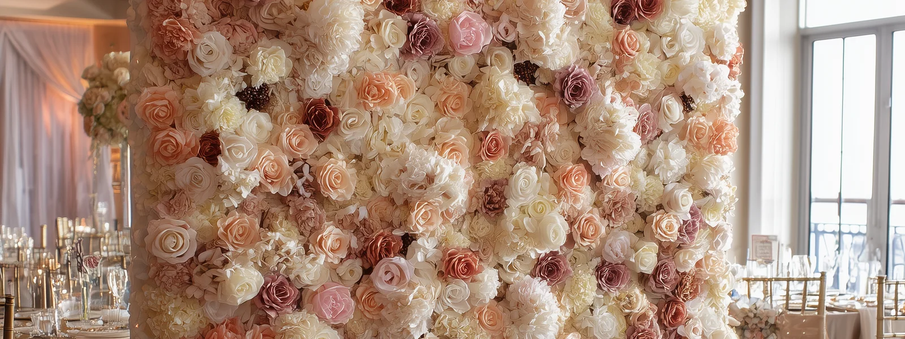
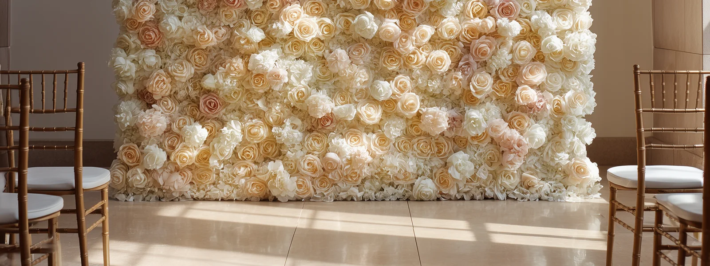

FLORINSKY provides flower wall rental in Burlington with hyper-realistic, studio-made floral backdrops for weddings, bridal showers, baby showers, birthdays, corporate events and private celebrations. Our collection includes oversized flower walls up to 11×8 ft, available in flat and semi-circular configurations, with delivery, professional setup and removal throughout Burlington. Choose from four exclusive floral designs — Green & Blush, Pink & Ivory, White & Ivory and Burgundy — created in our studio using premium Real Touch flowers. Burlington offers very different settings for celebrations, from waterfront venues beside Lake Ontario to historic estates, botanical gardens, golf clubs and modern banquet halls. The right floral backdrop depends not only on the colour you prefer, but also on the exact room, photography direction, available floor space and venue access. This guide will help you plan your flower wall around Burlington's event locations and identify the practical details worth confirming before your celebration.
Explore Our Flower Walls for Burlington Events


Green & Blush Flower Wall
Sage greenery, soft blush and ivory flowers create a layered botanical backdrop for weddings, showers and private celebrations.
Pink & Ivory Flower Wall
A composition of blush, dusty rose and ivory floral tones for bridal showers, baby showers, birthdays and wedding celebrations.
White & Ivory Flower Wall
A light, neutral floral backdrop that can complement different event colour palettes, venue interiors and photographic styles.
Burgundy Flower Wall
Deep burgundy, wine and plum floral tones provide a richer background for evening receptions, formal celebrations and event photography.
Flower Walls for Weddings, Showers, Birthdays & Corporate Events in Burlington
A Burlington wedding reception, a bridal shower in a private dining room and a corporate celebration at a conference venue may all use the same floral backdrop, but the space required around it can be very different.
Before selecting a flower wall, decide whether it will serve as a dedicated photography area, a decorative feature behind a table or part of the ceremony setting.
Weddings and Engagement Celebrations
At a wedding, a flower wall can be used behind the ceremony, as a reception feature or in a separate guest photography area.
These arrangements are not interchangeable.
If the wall is placed behind the sweetheart table, it becomes part of the reception design, but the table may prevent guests from approaching the flowers for full-length photographs.
A separate photo area offers more freedom for guest photography but needs enough space for people to gather without interfering with dinner service or the dance floor.
If you are planning a ceremony and reception at different locations, discuss both locations with FLORINSKY before booking. Moving a flower wall between spaces during an event should not be assumed to be included in the rental.
Our wedding flower wall rental guide explains how to plan ceremony, reception and guest photography arrangements in greater detail.
Bridal Showers, Baby Showers and Birthdays
For smaller celebrations, the most useful question is whether the floral backdrop should frame a decorated feature table or provide a dedicated place for guest photographs.
If the wall is positioned behind a dessert table, its lower section may be concealed by the table and decorations.
For a celebration where photographs are a priority, consider a separate position where guests can stand directly in front of the flowers.
The Pink & Ivory flower wall introduces soft blush and ivory tones, while Green & Blush offers a botanical colour palette. The final choice should account for the room's lighting and surrounding décor rather than the event type alone.
Corporate Events and Business Celebrations
Burlington's hotels, conference centres and cultural venues can accommodate business events with different combinations of registration areas, presentations, networking and photography.
A flower wall may serve as a dedicated background for team photographs or as a visual feature near the reception area.
Before finalizing its position, confirm whether the proposed location will remain available throughout the event. A space that appears empty during the venue tour may later be occupied by registration tables, audiovisual equipment or another part of the event setup.
For company photographs, consider the widest group you expect to photograph together. An oversized backdrop may provide additional floral coverage without requiring the camera to include the ordinary venue wall beside the installation. FLORINSKY's 3D Preview lets you inspect the floral composition in greater detail before choosing the final design.
Burlington Flower Wall & Event Venue Map | FLORINSKY
Explore Burlington event venues, including waterfront properties, historic estates, botanical gardens, golf clubs, banquet halls, hotels and cultural spaces.
Our interactive venue planning map is designed to help you compare locations and identify practical considerations before arranging a flower wall rental.
Open the full Burlington planning map
Select a venue to review its location, event-space characteristics, access considerations and useful questions to confirm with the venue coordinator.
The map is provided as a planning resource. Inclusion does not indicate a partnership with FLORINSKY or that we have previously completed an installation at a particular venue. Venue policies, access arrangements and available event spaces may change. Confirm the requirements for your specific booking directly with the venue.
Planning a Flower Wall at Burlington Waterfront Venues
Burlington's waterfront venues offer a particular planning challenge: the lake view may be an important part of the event setting, but it does not necessarily provide the most useful background or lighting for every photograph.
A floral backdrop creates its own visual setting. The decision is whether to use it as a separate photography area or incorporate it into the room's waterfront-facing layout.
The Pearle Hotel & Spa: Choose the Actual Event Space
The Pearle Hotel & Spa is located on Burlington's waterfront and offers several event spaces, including Edgewater, Laurentide, Boulevard, Northshore and Petite Isabelle. Its meeting and event spaces feature floor-to-ceiling windows and waterfront views.
These spaces should not be treated as one interchangeable event room.
A flower wall positioned for a large reception may require a different layout from one intended for a smaller private dining event.
Before selecting the final position, confirm the exact room, where the photographer will stand and how much floor space remains after the tables and other event elements are installed.
If the backdrop will be placed near the windows, consider how the natural light will affect photography at the time guests are expected to use the photo area.
For delivery and setup, ask the hotel which entrance external décor vendors should use and whether any specific loading or elevator arrangements apply to the booked room.

Spencer's at the Waterfront: Work With the Glass Pavilion
Spencer's at the Waterfront is located beside Lake Ontario in downtown Burlington. Its event setting includes a modern glass pavilion and the Observatory event space, which features panoramic lake views.
The glass architecture creates an important choice for flower wall placement.
If the backdrop is positioned against the windows, it may conceal part of the waterfront view that attracted you to the venue.
If it is placed elsewhere, it can provide a separate photographic background while preserving the lake-facing setting for dining and other activities.
Before choosing between these options, ask the venue for the actual event layout and identify the proposed photo area.
Check whether the position interferes with service routes, guest movement or the use of the surrounding space.
For an afternoon event, test the camera direction under daylight conditions. For an evening reception, consider how the flowers and guests will be illuminated once natural light fades.
Paletta Mansion: Separate the Mansion From the Parkland
Paletta Mansion is a historic waterfront property at 4250 Lakeshore Road. The mansion offers several rooms, including the Great Room, Carmine Room, Sunroom, Library and other spaces, together with an outdoor verandah and terrace overlooking Lake Ontario.
One important detail is that the mansion and surrounding parkland should not automatically be treated as a single unrestricted event space.
Paletta's wedding information describes use of the mansion and preferred use of the surrounding park during the event, while the venue also maintains separate arrangements for photography.
Before arranging an outdoor flower wall, ask whether the exact proposed position is included in your booking and whether a freestanding floral structure is permitted there.
For an indoor installation, confirm the booked room, vendor access and the appropriate carrying route through the property.
A historic setting may also influence where equipment can be positioned. The selected floral backdrop should complement the room without obstructing entrances, circulation or architectural features.
Historic Properties, Botanical Gardens & Cultural Venues
Burlington's historic and cultural properties offer a different event environment from a conventional hotel ballroom.
Some venues have fixed architectural features, established rental boundaries, public visitor areas or different spaces for ceremonies and receptions.
The practical question is not simply whether the venue has enough total space for a flower wall.
It is whether your specific booking includes an appropriate installation location, sufficient setup access and permission for an external décor provider.
Royal Botanical Gardens: Confirm Which City Your Event Is Actually In
Royal Botanical Gardens operates venues across the Burlington–Hamilton area.
The RBG Centre is located at 680 Plains Road West in Burlington, while the Rock Garden Great Room is at 1185 York Boulevard in Hamilton.
This distinction matters when arranging delivery.
An enquiry that identifies the venue only as Royal Botanical Gardens does not provide enough information to determine the actual event address.
At RBG Centre, the Auditorium can be used as one large space or divided into smaller configurations. Rooms 1 and 2 offer another event-space arrangement, while the Café Annex provides a separate setting for smaller gatherings.
For a flower wall, the exact room and final configuration determine the available width, floor depth and camera position.
Royal Botanical Gardens also distinguishes its indoor event spaces from outdoor garden areas. If your event includes an outdoor ceremony, indoor reception or photography in the gardens, confirm the location and décor permissions for each activity separately.
Before booking, ask which entrance the floral backdrop should be delivered through and whether the selected event package provides sufficient time for installation and removal.
Ireland House Museum: Plan the Outdoor Ceremony and the Floral Backdrop Separately
Ireland House Museum offers historic grounds for weddings and private gatherings, with several ceremony locations around the property.
The museum also has an indoor program room in its Interpretive Centre for smaller meetings and gatherings.
A flower wall intended for a ceremony on the grounds requires a different setup plan from one used inside the program room.
For an outdoor installation, confirm the exact approved position, how equipment may be brought to the location and whether the ground surface is appropriate.
Ask the museum whether the flower wall may remain in place during the entire event or whether the ceremony and subsequent activities require different arrangements.
If the event also includes indoor activities, do not assume that the floral backdrop can be relocated between the outdoor and indoor areas without a separate setup plan.
Joseph Brant Museum: Check the Room Before Choosing the Wall
Joseph Brant Museum offers meeting and event space near Burlington's waterfront.
Its Shoreline Room is a relatively compact main-floor space with a published capacity of up to 42 people, while the museum also offers a separate boardroom.
For a smaller venue like this, the room's total capacity is not a useful substitute for measuring the actual photography area.
A flower wall needs sufficient uninterrupted width, but the complete photo setup also requires room for guests and the camera.
Before selecting an 8×8 ft backdrop, request the event-room layout and confirm how much usable space remains after tables, chairs and presentation equipment have been arranged.
If the wall would obstruct an entrance or leave insufficient room for photographs, the event layout may need to be reconsidered before the rental is confirmed.
Plan Flower Wall Delivery & Setup in Burlington
When arranging a flower wall rental with delivery in Burlington, the exact venue address is only the starting point.
The delivery plan should account for the entrance used by external vendors, permitted unloading arrangements, the route to the booked room and the time available for installation.
A hotel on the waterfront, a historic mansion and a convention centre may require completely different delivery procedures.
Downtown Burlington: Confirm the Unloading Location
For events at downtown waterfront properties, identify the approved unloading location before event day.
The Pearle Hotel & Spa, Spencer's at the Waterfront, Art Gallery of Burlington and other downtown venues occupy different types of buildings, each with its own access arrangements.
For example, the Art Gallery of Burlington identifies its parking area at the back of the building, accessible from Elgin Street. However, guest parking information alone does not establish where an external décor provider may unload equipment.
Ask the event coordinator to confirm:
- The entrance intended for external décor vendors.
- Where a delivery vehicle may stop for unloading.
- Whether equipment must pass through a service corridor or elevator.
- The earliest permitted installation time.
- The approved route for removing the flower wall after the event.
If the venue has several event rooms, include the exact room name in your enquiry.
The installation plan should be based on the space you have actually booked, not simply the venue's main entrance or general address.
Aldershot and West Burlington: Check the Actual Venue Entrance
The Aldershot area includes properties such as Royal Botanical Gardens and Burlington Golf & Country Club.
For an event at RBG Centre, provide the exact address and room name. If you have booked one of the Royal Botanical Gardens locations in Hamilton instead, identify that location explicitly.
At Burlington Golf & Country Club, clarify the route for delivering event décor and the location where the flower wall may be installed.
The club's published event conditions require arrangements for the arrival and departure of event equipment. This makes advance coordination particularly relevant when planning an external floral backdrop.
East Burlington and the Burloak Corridor: Identify the Correct Hall
Burlington Convention Centre is located on Burloak Drive, near the QEW.
The venue offers several event spaces, including three connecting banquet halls: Emerald Hall, Queen Victoria Hall and Rosewood Hall.
A flower wall setup should be planned around the specific hall or hall combination booked for the event.
If the halls are connected for a larger reception, the available photography area may differ from a configuration in which each hall operates independently.
Ask for the actual event floor plan, the approved backdrop location and the entrance intended for external vendors.
The useful delivery instruction is not simply “Burlington Convention Centre.” It is the exact hall, approved unloading point, carrying route and installation window.
Allow Enough Time for Both Installation and Removal
When discussing venue access, ask two separate questions:
When can the décor provider begin installation, and when must the installation be complete?
A venue may allow vendors to enter the building before the event room itself becomes available.
Likewise, access arrangements at the end of the celebration may differ from those used during daytime setup.
If the venue restricts access after the event or requires all external décor to be removed within a particular period, those conditions should be communicated to FLORINSKY before the rental is finalized.
A complete setup plan covers the arrival, installation and removal of the flower wall rather than considering only the guest arrival time.
Choosing the Right Flower Wall Size & Configuration
FLORINSKY offers standard 8×8 ft flower walls and oversized configurations up to 11×8 ft.
The expanded format provides three additional feet of floral width, which can be useful for wider group photographs and larger event spaces.
However, the right size depends on the usable photography area rather than the venue's overall capacity.
8×8 ft Flower Wall
The standard 8×8 ft configuration creates a square floral backdrop suitable for portraits, couples and smaller group compositions.
It may be appropriate for a defined photography area in a private event room or a smaller ballroom.
However, the wall's dimensions do not represent the complete space required for photography.
There must also be enough room for people standing in front of the backdrop and for the camera to capture the intended composition.
Before confirming the standard configuration, check the usable width and depth of the actual photo area.
Oversized 11×8 ft Flower Wall
The 11×8 ft configuration provides additional floral width for larger group photographs.
This is particularly useful when you want people near the outer edges of a group to remain against the floral background rather than exposing the ordinary venue wall beside the installation.
The oversized format can also create a more substantial visual feature in a larger reception space.
For a group photograph, consider the number of people you expect to photograph together, their arrangement and the camera's framing.
Then compare that composition with the available floor space.
The total number of event guests is less useful than the size of the group that will actually stand in front of the wall at one time.
Flat or Semi-Circular Flower Wall?
The installation configuration changes how the floral backdrop occupies the room.
A flat flower wall provides a relatively linear photographic background.
A semi-circular configuration brings the floral surface around the photography area, creating a more dimensional setting.
The semi-circular option requires additional floor depth for the structure, the people being photographed and access into and out of the floral space.
For a Burlington venue with a compact event room, the flat configuration may offer a more practical arrangement.
In a larger ballroom or a dedicated photography area, a semi-circular design may provide an alternative when sufficient floor space is available.
Before choosing the final configuration, review the actual room dimensions and approved installation position.
Choose the Floral Design for the Venue's Actual Lighting
A floral backdrop should be selected with the lighting guests will experience during the event in mind.
Burlington's waterfront event venues can include large windows and extensive natural light, while banquet halls and conference spaces may rely more heavily on controlled interior lighting.
These conditions influence how floral colours and individual flower details appear in photographs.
White & Ivory provides a light, neutral background. In a bright room, consider whether sufficient contrast and front lighting will separate guests from the floral backdrop.
Pink & Ivory introduces warmer blush and rose tones. Coloured uplighting can change how these tones appear in photographs.
Green & Blush combines botanical greenery with softer floral colours, offering a different visual relationship with outdoor and garden-oriented settings.
Burgundy provides a deeper colour background. For an evening event, confirm that the photography area has enough suitable lighting to retain detail in the darker flowers.
If the venue has several lighting settings, evaluate the wall against the conditions expected when most photographs will be taken.
FLORINSKY uses premium Real Touch flowers designed to reproduce the natural appearance and texture of fresh floral compositions. This is especially relevant for guest photography, where people may stand close enough for individual petals to become visible in portraits.
Learn more about the materials in our Real Touch vs Silk Flower Walls guide.
You can also explore our studio-made floral designs to understand how FLORINSKY creates its individual flower wall compositions.
Outdoor Flower Wall Setup in Burlington
An outdoor flower wall requires both permission to use the selected location and confirmation that the installation can be set up safely there.
A waterfront view, garden or outdoor terrace may provide an attractive photographic setting, but the presence of a suitable-looking space does not automatically mean external décor is permitted.
Private Waterfront Properties and Gardens
For an outdoor installation at a private Burlington venue, ask the coordinator to identify the precise location where a freestanding floral backdrop may be installed.
Confirm whether the area is included in your event booking, what type of surface is available and how the equipment can reach the proposed position.
An outdoor location should also be evaluated for weather exposure, ground conditions and the amount of clear space available around the structure.
FLORINSKY uses a reinforced support system designed to improve the stability of its flower walls.
Nevertheless, the exact installation position must be assessed before an outdoor setup can be confirmed.
For an event with an outdoor photography area, agree on a suitable indoor or covered alternative in advance.
The backup position should provide enough space for the floral backdrop and a functioning photography area, rather than being selected only after the outdoor plan becomes impractical.
Burlington City Parks: Photography Permission Is Not Décor Permission
The City of Burlington offers group photography bookings at selected parks, including LaSalle Park, Hidden Valley Park, Kerncliff Park, Tansley Woods Park and designated areas of Paletta Lakefront Park.
These bookings are subject to specific conditions. The City also states that photography contracts do not provide exclusive access to a park.
This creates an important distinction for clients planning outdoor photographs.
A contract allowing group photography does not, by itself, establish permission to deliver and install a freestanding flower wall.
Before planning a flower wall at a Burlington park, confirm whether the specific structure and installation are permitted under the applicable booking.
The City distinguishes group photography, private gatherings and other types of events on municipal property. Different booking and approval requirements may apply depending on the event.
Do not assume that a permit or approval intended for one activity automatically covers another.
Paletta Lakefront Park: Confirm the Exact Area
Paletta Lakefront Park requires particular attention because it is associated with a historic event property while also appearing in the City's public photography booking information.
The City identifies designated areas and separate booking conditions for group photography at the park, while Paletta Mansion maintains its own event arrangements.
If your event involves the mansion and surrounding grounds, confirm which locations are included in your booking.
Ask specifically whether the proposed flower wall position is approved and which entrance or route may be used to deliver the structure.
Permission to hold an event inside the mansion should not be interpreted as unrestricted permission to install décor elsewhere on the property.
What to Confirm Before Booking Your Burlington Flower Wall
The most useful rental enquiry connects the selected flower wall to the actual event space.
Before finalizing your booking, gather the information that determines whether the proposed installation will work at your venue.
| Information | Why it matters |
|---|---|
| Event date | Establishes availability for the requested date. |
| Venue name and full address | Identifies the delivery location. |
| Exact ballroom, hall or event room | Prevents planning for the wrong space. |
| Preferred floral design | Establishes the wall you are considering. |
| Preferred size | Helps determine the required installation width. |
| Flat or semi-circular configuration | Changes the floor space needed for the setup. |
| Intended use | Distinguishes a dedicated photo area from a ceremony or reception feature. |
| Approved backdrop position | Confirms where the venue permits the installation. |
| Vendor entrance and unloading instructions | Establishes the equipment delivery route. |
| Stairs, elevators and doorway restrictions | Identifies possible access limitations. |
| Earliest vendor access and setup deadline | Determines the installation window. |
| Removal time and exit route | Establishes how the wall can be removed after the event. |
| Outdoor permission and backup location | Provides an alternative if the outdoor plan changes. |
If your venue has a floor plan or you have a photograph of the proposed installation position, include it with your enquiry.
You do not need to have every detail confirmed before contacting FLORINSKY. The purpose is to identify which questions still need to be resolved before the rental arrangements are finalized.

Burlington Areas We Serve
FLORINSKY provides flower wall rental throughout Burlington, including Downtown Burlington, Aldershot, Roseland, Shoreacres, Tyandaga, Millcroft, Alton Village, The Orchard, Brant Hills, Headon Forest, Tansley and surrounding neighbourhoods within the city.
Events in these areas may take place at private residences, hotels, restaurants, banquet halls, golf clubs, cultural facilities and outdoor event properties.
For delivery planning, the exact venue address, booked event space and access arrangements are more useful than the neighbourhood name alone.
FLORINSKY also provides flower wall rental throughout Toronto and the GTA, including nearby Oakville. Explore our flower wall rental service in Oakville or flower wall rental in Toronto if your event is taking place outside Burlington.
Ten Burlington Venues to Consider When Planning Your Backdrop
The following venues illustrate different event environments in Burlington, from waterfront reception spaces and historic properties to botanical gardens, cultural facilities and conference centres.
These are planning references, not venue rankings, endorsements or claims that FLORINSKY has previously completed installations at these properties.
The most useful question for each venue is how its specific layout, access arrangements or event policies may affect your flower wall rental.
The Pearle Hotel & Spa
The Pearle Hotel & Spa offers several event spaces overlooking Lake Ontario, including Edgewater, Laurentide, Northshore and other rooms with different layouts.
For a flower wall, confirm the exact booked room rather than choosing the installation position from a general photograph of the hotel. Large windows can also affect the photography direction and the available placement options.
Ask the event coordinator where an external décor provider should unload, which route leads to the booked space and where the backdrop may stand without interfering with guest or service circulation.
Spencer's at the Waterfront
Spencer's at the Waterfront offers a modern glass pavilion overlooking Lake Ontario, with spaces for weddings, private celebrations and corporate events.
The venue's extensive glazing makes the backdrop orientation particularly relevant. A floral installation should provide a useful photographic background without unnecessarily blocking the waterfront setting or interfering with the final event layout.
Confirm the exact reserved space, the approved installation position and where guests will stand for photographs. Ask whether a position away from the principal windows would preserve the view while providing more controlled photography lighting.
Paletta Mansion
Paletta Mansion combines historic interiors with a waterfront property. Its event spaces include several individual rooms and an outdoor verandah and terrace.
The useful distinction is between the indoor mansion, its event-related outdoor spaces and the surrounding parkland.
Before choosing a flower wall position, confirm which areas are included in your specific booking and whether an external freestanding backdrop may be installed there.
For an indoor setup, identify the approved carrying route and the exact room. For an outdoor position, confirm both venue permission and the suitability of the proposed surface.
Royal Botanical Gardens — RBG Centre
RBG Centre is located at 680 Plains Road West in Burlington and offers several event spaces, including an auditorium that can be divided into smaller configurations.
A practical detail that should not be overlooked is that Royal Botanical Gardens also operates event spaces in Hamilton. The name of the organization alone is therefore insufficient delivery information.
For a Burlington event, identify RBG Centre and the exact room you have booked.
If your celebration includes an outdoor garden area, confirm that the planned floral backdrop is permitted at that location and that the outdoor setup and removal can fit within the approved event arrangements.
Ireland House Museum
Ireland House Museum offers historic grounds with several outdoor ceremony locations, including areas near the house and mature trees. The property also includes an indoor program room for smaller gatherings.
An outdoor ceremony backdrop requires a different setup plan from a flower wall intended for an indoor gathering.
Confirm the precise ceremony location, the approved route for bringing equipment onto the grounds and whether freestanding floral décor is permitted in the proposed position.
If you are planning an outdoor ceremony followed by an indoor celebration, discuss both locations before booking rather than assuming the same installation can be transferred between them.
Joseph Brant Museum
Joseph Brant Museum offers meeting and event facilities near downtown Burlington's waterfront.
Its Shoreline Room is a compact main-floor event space, while the museum also offers a smaller boardroom.
For a flower wall, the critical consideration is how much usable floor space remains after the room is arranged for the actual event.
Request the room layout before selecting the backdrop configuration. Confirm that there is enough space for the floral wall, people standing in front of it and the camera position. Also ask which entrance external décor providers should use and whether the proposed installation is permitted within the booked room.
Art Gallery of Burlington
Art Gallery of Burlington offers several event spaces, including the Shoreline and Rotary rooms, a lounge, courtyard and conservatory. The main event space can be used in different configurations.
The gallery's published policies allow clients to bring their own decorations, subject to advance approval by the events team. Décor that may damage the gallery's walls or floors is not permitted.
For a FLORINSKY installation, obtain approval for the proposed freestanding flower wall and confirm the exact room or outdoor area.
If the event will use a divided room, request the actual configuration before choosing the backdrop position. The gallery also identifies a parking area accessible from Elgin Street. Confirm separately where external vendors may unload equipment and how it should be brought into the booked space.
Burlington Convention Centre
Burlington Convention Centre offers several banquet and conference spaces, including three connecting banquet halls and two executive-style boardrooms.
The important planning detail is that the event room may change depending on which halls are booked individually or combined.
Before choosing a flower wall configuration, request the floor plan for the actual event arrangement. Confirm the exact ballroom, the approved photography area and whether external décor is permitted in the intended position.
Ask the coordinator which entrance should be used for delivery, where equipment may be unloaded and when installation and removal may take place.
Burlington Golf & Country Club
Burlington Golf & Country Club offers waterfront-facing event spaces, including the Bayview Grand Ballroom and smaller Bayview East and Bayview West rooms. The property also provides outdoor ceremony and terrace areas.
One particularly important planning detail is the club's distinction between event areas and other parts of the golf property.
Its published wedding information restricts access to certain golf-course and members-only areas and identifies designated locations for wedding photography.
If you are planning an outdoor flower wall, confirm that the proposed position is within the area approved for your event. For an indoor installation, identify the exact Bayview room and confirm the event layout, vendor access and delivery arrangements.
Crossroads Unity Commons
Crossroads Unity Commons offers flexible event spaces in Burlington for conferences, weddings, corporate gatherings and private celebrations. Its facilities include different event-room configurations and audiovisual equipment.
For a corporate event, the floral backdrop may need to share the room with a stage, presentation equipment or networking areas.
Confirm the exact event space and final layout before selecting the photo area.
Ask whether the backdrop can be positioned away from equipment access and whether the intended photography area will remain available throughout the event. The venue also offers different meeting and event spaces, so provide FLORINSKY with the actual room rather than the building address alone.
Flower Wall Rental Burlington FAQs
Do you provide flower wall rental with delivery and setup in Burlington?
Yes. FLORINSKY provides flower wall rental throughout Burlington with delivery, professional setup and removal.
Include your event date, venue name, full address and exact event space when requesting a quote.
What flower wall sizes are available for Burlington events?
FLORINSKY offers standard 8×8 ft flower walls and expanded configurations up to 11×8 ft.
The suitable size depends on the selected design, available venue space and the type of photographs you want to create.
The larger configuration provides additional floral width for wider group photographs.
Can I choose a flat or semi-circular flower wall?
Yes. FLORINSKY offers both flat and semi-circular floral backdrop configurations.
A semi-circular installation requires additional usable floor depth, so the venue layout and intended photography area should be reviewed before confirming the final arrangement.
Can I rent a flower wall for a Burlington waterfront wedding?
Yes. A flower wall can be planned for a wedding at a waterfront venue, subject to the property's permission and the suitability of the selected installation position.
For an outdoor location, confirm the approved décor area, installation surface, equipment access and an appropriate indoor or covered backup location.
Can a flower wall be installed at Paletta Mansion?
Potentially, subject to approval for the exact installation position.
Paletta Mansion offers indoor event rooms and outdoor areas, but your specific booking determines which spaces are available for the event.
Confirm whether the flower wall may be installed in the proposed room, terrace or outdoor area before finalizing the setup.
Can I use a flower wall at Royal Botanical Gardens?
Potentially. Royal Botanical Gardens offers different indoor and outdoor event spaces, and the applicable arrangements depend on the location and event booking.
Provide FLORINSKY with the exact venue address and room name.
If your event includes an outdoor garden area, confirm that the proposed freestanding flower wall is permitted there.
Can I install a flower wall in a Burlington public park?
Do not assume that a park reservation or photography contract automatically permits the installation of a freestanding flower wall.
The City of Burlington has separate booking arrangements for group photography and other activities on municipal property.
Confirm the requirements for your specific event and proposed décor installation directly with the City before making rental arrangements.
How much does a flower wall rental cost in Burlington?
The quote for your event should confirm the selected floral design, size, configuration, rental arrangements and delivery, installation and removal details.
Send FLORINSKY your event date, venue address, preferred flower wall and any known setup requirements to receive a quote.
What if my Burlington venue has multiple event rooms?
Include the exact ballroom, banquet hall, meeting room or outdoor event space in your enquiry.
If the venue offers connected or divided rooms, request the floor plan for your actual event configuration.
This will help establish the approved flower wall position and the usable space available for the photography area.
What information should I provide before booking?
Send your event date, venue name and full address, exact event space, preferred flower wall and any available vendor-access instructions.
If the installation is outdoors, also include the approved location and proposed indoor or covered backup.
For additional information about the rental process, visit our Flower Wall Rental FAQ.